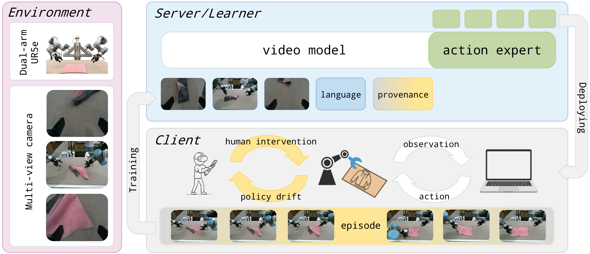
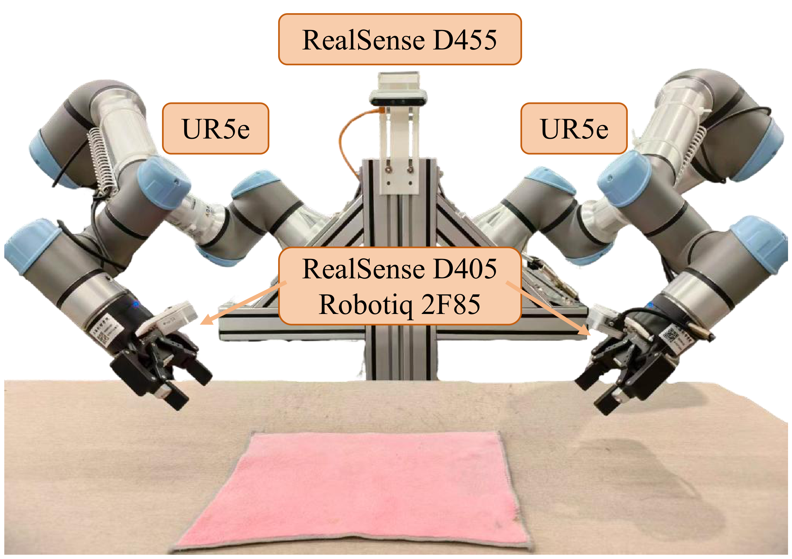
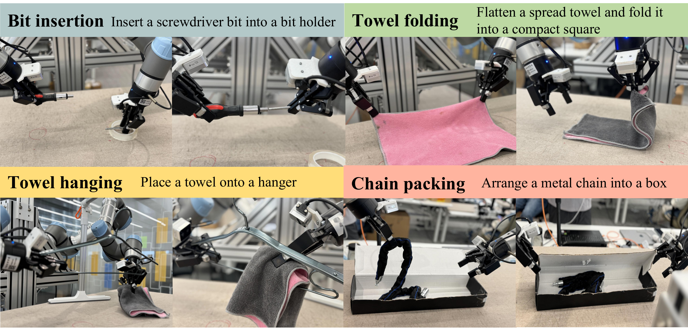
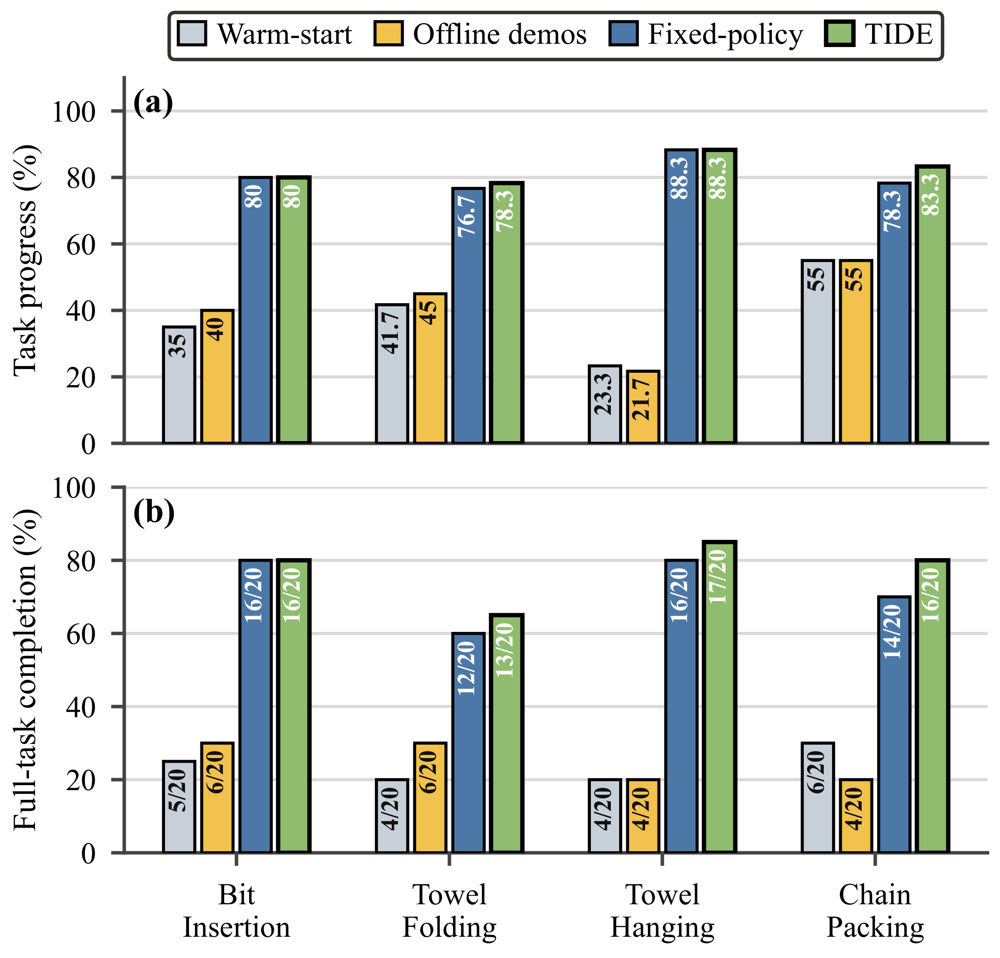
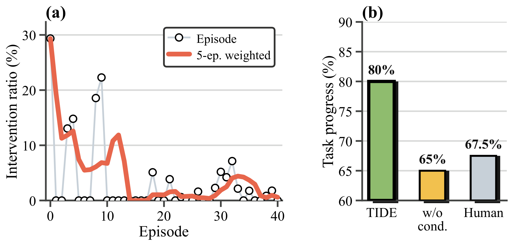

Bit Insertion
Pick up a screwdriver bit and insert it into the holder.
Make deployment a learning process.
Training in Deployment:
Human-in-the-loop Online Post-Training
for Robot Manipulation
Video unavailable. You can explore the demonstrations below.
4 bimanual manipulation tasks
Precision contact · Deformable objects · Recovery
Less than 1 hour per task
From deployment rollouts to the final deployable checkpoint
Human + policy provenance
Source-conditioned learning · Episode-boundary updates
Robot manipulation / Online post-training
Training in Deployment: Human-in-the-loop Online Post-Training for Robot Manipulation
01 / The problem & our approach
Large pretrained robot foundation models provide strong priors for manipulation, yet adapting them to target tasks with offline teleoperated demonstrations often fails to cover the contact-rich, recovery, and precision-critical states encountered during deployment. Existing methods mitigate this issue by augmenting offline demonstrations with human-in-the-loop data or online reinforcement learning. Despite this, offline post-training adapts slowly because it cannot immediately absorb deployment experience, while online RL typically relies on value functions or auxiliary actor-critic models, increasing both training complexity and instability.
We present TIDE (Training In DEployment), a human-in-the-loop online post-training system. TIDE introduces a provenance-conditioned supervised learning framework that updates the policy online from human interventions and policy-generated rollouts collected during deployment, without a learned critic, reward model, or action scorer. Across four real-world bimanual manipulation tasks, TIDE improves milestone-normalized task progress and binary full-task completion over the warm-start policy and matched additional offline demonstrations, and performs comparably to the Batch control (batch-at-the-end) while making updated checkpoints available during deployment. Each task-specific online post-training session, from the start of deployment rollouts until the final checkpoint is available, completes in less than one hour while learning and checkpoint handling run asynchronously.
02 / A single deployment loop
A warm-started world-action policy acts on the real robot. Human interventions expose recovery behavior, while policy-executed segments show what the model can already accomplish. TIDE keeps these sources distinct as the learner absorbs deployment experience.

A chunk receives a human or policy label only when all 50 actions share that source. Chunks crossing a takeover boundary are excluded. Provenance records who executed the actions; it does not score their quality.

Only episodes manually confirmed as successful enter the online dataset. The video backbone, adapter, action expert, and source embeddings are updated; the text encoder and video VAE remain frozen.
03 / Four tasks, one evaluation protocol
Each method–task pair is evaluated on 20 autonomous rollouts from the same predefined initial-state set, with no human takeover. We report milestone-normalized task progress and full-task completion separately.

Completed milestones divided by the task's milestone count, averaged over 20 rollouts.
All milestones must be completed. Counts are reported as k/20.
Warm-start, additional offline demonstrations, Batch-at-the-end, and TIDE share the task-specific starting checkpoint.
04 / Autonomous performance & deployment diagnostics
TIDE improves autonomous task performance over Warm-start and matched additional Offline demos. Its final performance is comparable to Batch; updated checkpoints become available within the deployment session.

Progress credits intermediate milestones. Completion requires the entire task.
TIDE matches Batch on Bit Insertion and Towel Hanging progress, and is higher on Towel Folding and Chain Packing. Completion is tied on Bit Insertion and higher by one or two rollouts on the remaining tasks.
Watch the real-robot examples ↓| Task | Warm-start | Offline demos | Batch | TIDE |
|---|---|---|---|---|
| Bit Insertion | 5/20 | 6/20 | 16/20 | 16/20 |
| Towel Folding | 4/20 | 6/20 | 12/20 | 13/20 |
| Towel Hanging | 4/20 | 4/20 | 16/20 | 17/20 |
| Chain Packing | 6/20 | 4/20 | 14/20 | 16/20 |

On Bit Insertion, TIDE reaches 80% task progress, compared with 65% without provenance conditioning and 67.5% with human-executed online chunks only.
The observed frame-weighted intervention ratio decreases after the early deployment phase. It measures supervision burden within this task; it is not an autonomous-performance metric or, by itself, evidence of a causal learning effect.
05 / Real-robot rollouts
Watch the warm-start policy and the final TIDE checkpoint on four bimanual manipulation tasks. These are illustrative autonomous rollouts with no human takeover.
Clips are independent recordings with their own playback controls. They retain the supplied playback timing and do not replace the 20-rollout quantitative evaluation.
Pick up a screwdriver bit and insert it into the holder.
Flatten the towel, then complete two successive folds.
Pick the hanger, place the towel, and hang it on the rack.
Pack the chain, close the lid, and tuck both box flaps.
06 / Citation
@article{gu2026tide,
title = {Training in Deployment: Human-in-the-loop Online Post-Training for Robot Manipulation},
author = {Gu, Chun and Wei, Xiaofei and Chen, Yiming and Zhang, Bozhou and Zhang, Juntong and Zhu, Xiatian and Zhang, Li},
journal = {arXiv preprint},
year = {2026}
}